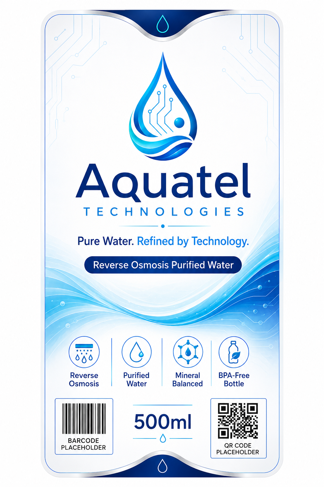

Our water quality promise
Clean, low-TDS, balanced water - bottled and refilled with care. Below are plain-language explanations and an illustrative comparison.
Purity metrics
Illustrative target values - actual figures depend on source water and will be confirmed by testing.
0 ppm
Target TDS
0
Balanced pH
0%
RO purified
0-stage
Filtration
Quality comparison
Illustrative demo data only - not laboratory results.
Why these metrics matter
- TDS - lower dissolved solids generally mean cleaner-tasting water.
- pH balance - balanced water tastes smooth, not sour or flat.
- Clarity & odour - purification reduces cloudiness and smells.
- Filtration stages - more stages mean more chances to remove impurities.
Clean handling & bottling
- Sanitised, food-grade containers
- Hygienic bottling and refilling practices
- Routine quality checks (schedule to be confirmed)
- Certification details to be added
Water Quality Report
A downloadable water quality report will be published here once testing is finalised.
Placeholder - report pending
Clear, honest labelling
Every Aquatel bottle carries the same promise: reverse osmosis purified water, mineral balanced, in a BPA-free bottle.
- Reverse osmosis purified
- Purified, balanced-pH water
- BPA-free bottle
- Barcode & QR placeholders for batch traceability
Quality & safety questions
RO purified water is widely used for everyday drinking. We do not make medical claims - consult a professional for specific health needs.
RO reduces dissolved solids, including some minerals. A balanced taste is part of our process goal.
A routine testing schedule will be confirmed and published. This is currently a placeholder.
Certification details are to be added. We will only display certifications once confirmed.